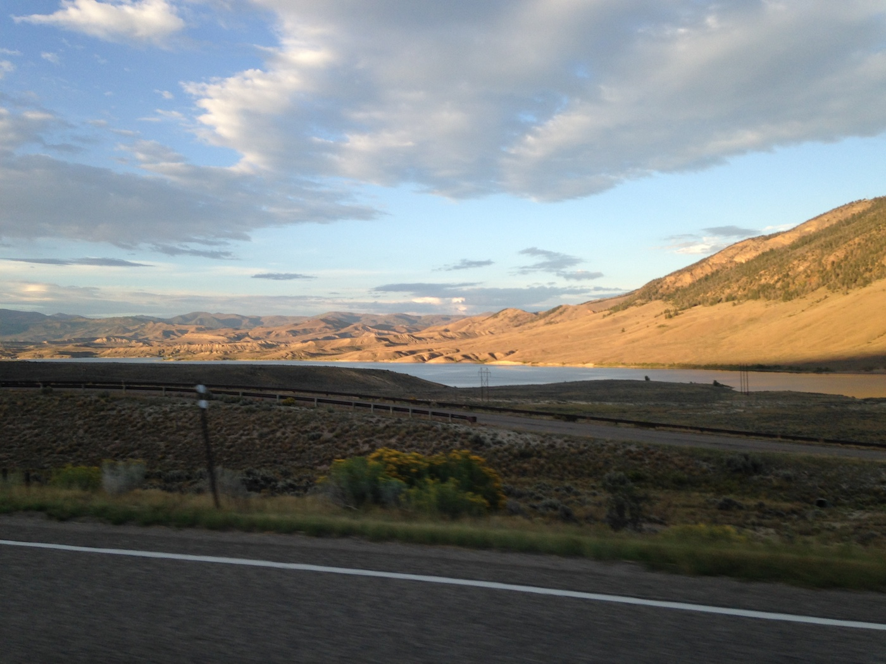
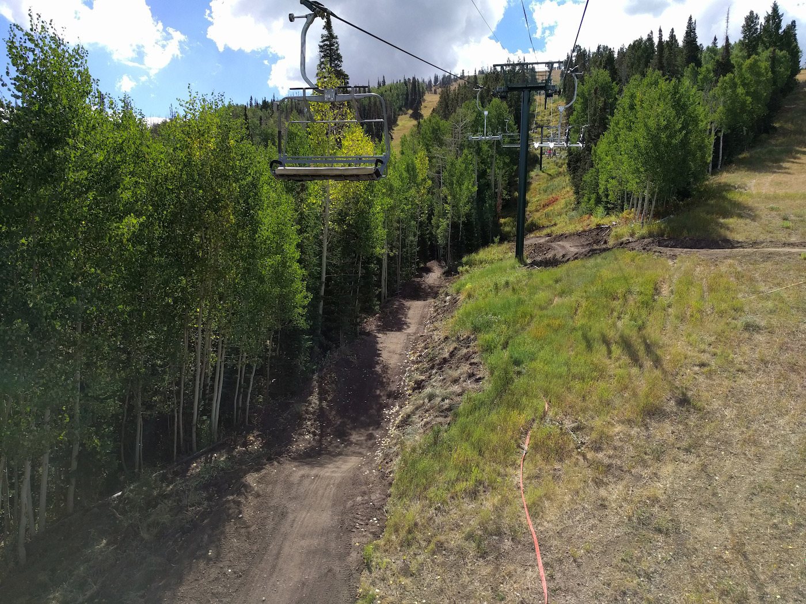
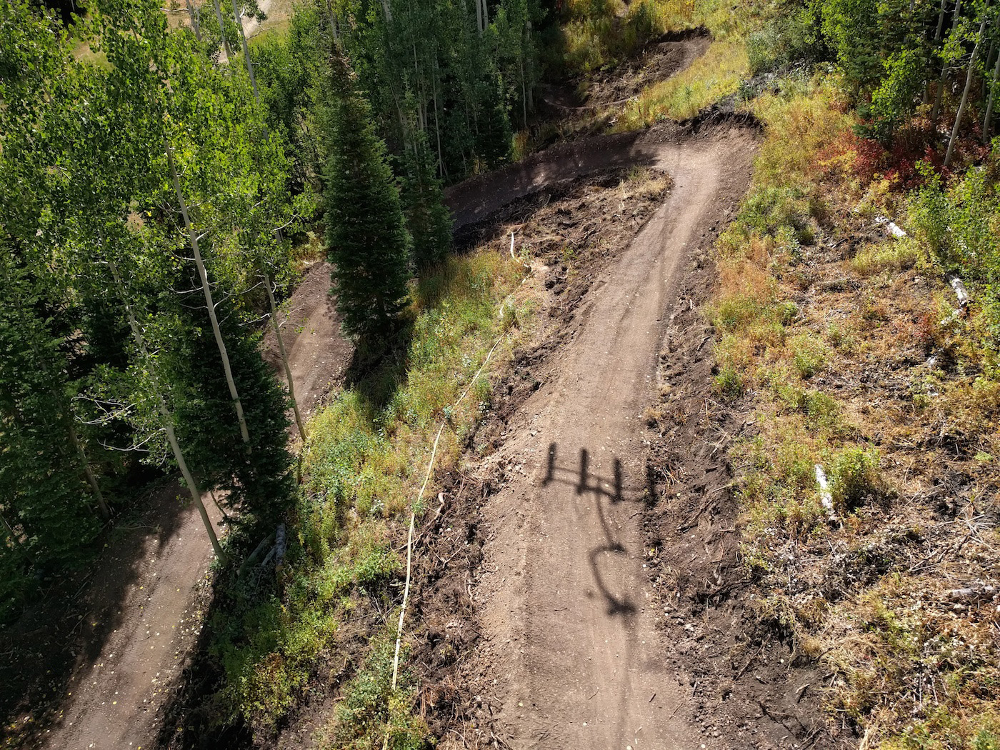
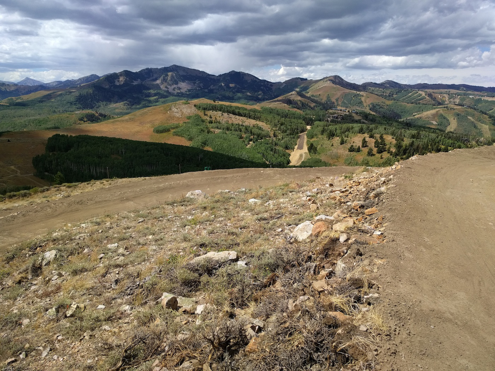
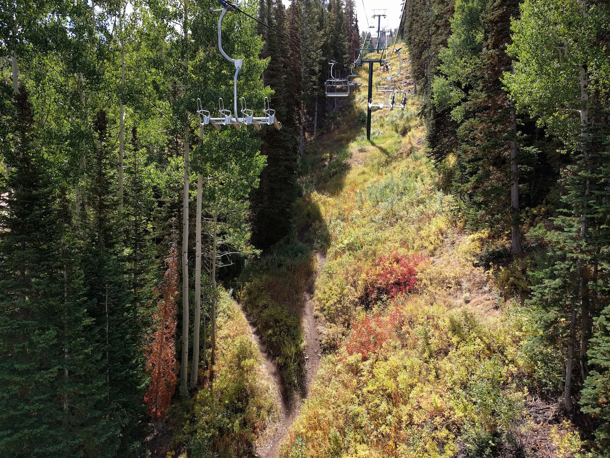
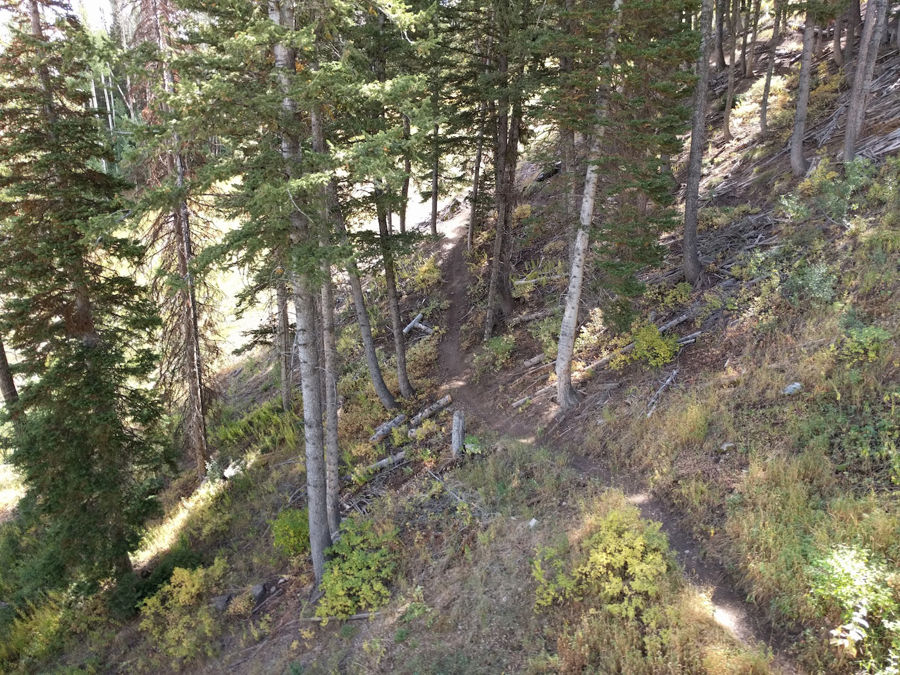
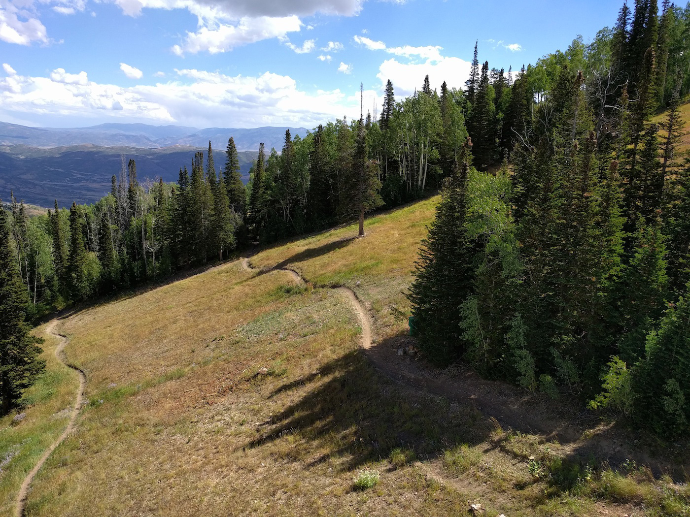
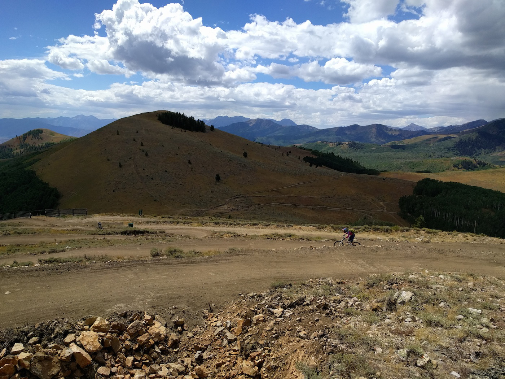

Deer Valley

Somewhere in Utah.
Day 3 we camped somewhere outside of Deer Valley UT and rode the Deer Valley Bike Park.

Smooooooth.

More buttery berms!
The weather was moody on the backside of Deer Valley.

Deer Valley feels big and spread out. This is the backside of the upper mountain. You descend down into a meadow and then continue to descend back to the upper base on the other side.
More berms!
Don't be fooled by all these smooth berm shots. Deer Valley has a lot of old school slow speed technical trails too.

Deer Valley also has some steep chutes.

And more steep chutes.

So many trails!
Right or Left?
Park City is just across the way.
